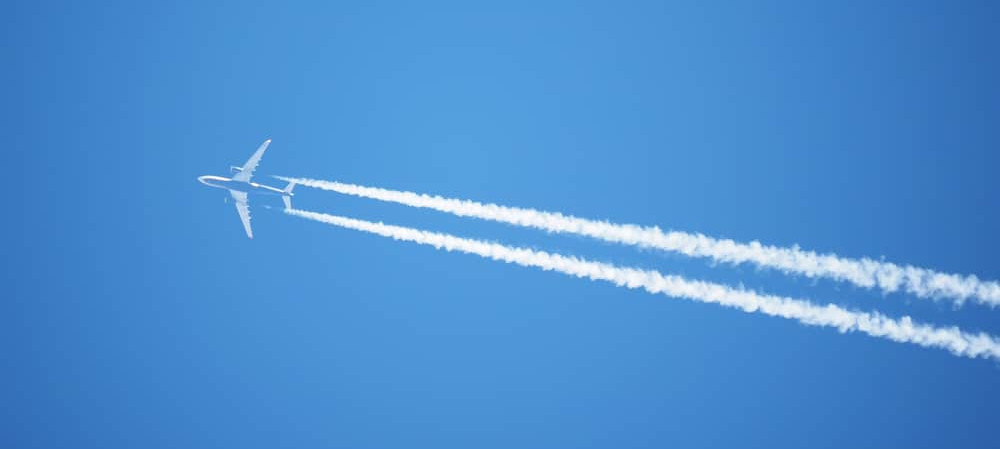
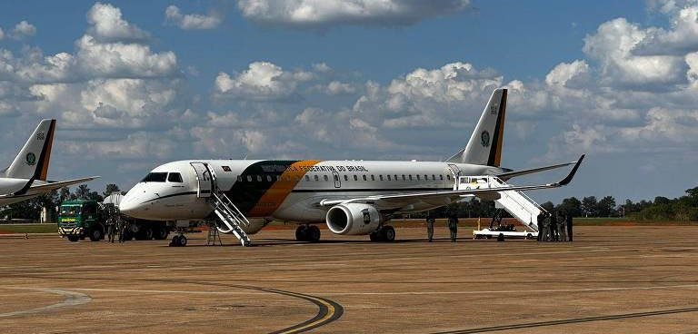
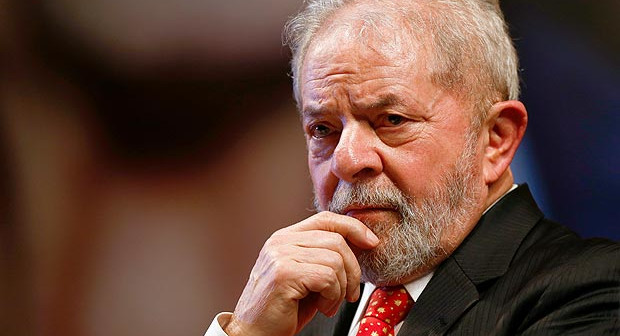

Avião Do Presidente Lula Apresenta Falhas
Depois de visitar o México, o avião em que o presidente Lula estava encontrou problemas logo após levantar voo.

Em um incidente que despertou preocupações de segurança, o avião presidencial brasileiro que transportava o presidente Luiz Inácio Lula da Silva e sua comitiva apresentou problemas técnicos logo após a decolagem da Cidade do México, onde o líder brasileiro estava em visita oficial. A aeronave, identificada como VC-1 Airbus A319, que tem sido usada pelo governo brasileiro desde 2005, foi forçada a permanecer no ar por aproximadamente quatro horas, realizando manobras para gastar combustível antes de retornar com segurança ao Aeroporto Internacional da Cidade do México.
O incidente ocorreu na última terça-feira (1º), e desde então, as autoridades brasileiras estão trabalhando para esclarecer as causas da pane, que envolveu o sistema de motor da aeronave. A Força Aérea Brasileira (FAB) emitiu uma nota explicando que os procedimentos de segurança foram executados ainda em voo para garantir um pouso seguro. A FAB mencionou que as operações realizadas com a aeronave estavam dentro do protocolo padrão para situações de emergência, e destacou que o retorno ao solo foi seguro e sem prejuízo à integridade dos passageiros a bordo.
Manobras para Queimar Combustível
Após a detecção do problema, a aeronave teve que sobrevoar a região por horas para reduzir o peso e poder pousar dentro do limite máximo seguro. Este procedimento, conhecido como "holding pattern", é comum em casos de emergência quando é necessário queimar combustível para alívio de peso antes de um pouso de segurança. A operação foi cuidadosamente monitorada pelos pilotos e pelas equipes de solo do aeroporto mexicano, que garantiram o apoio necessário para o pouso seguro da aeronave.
Este modelo específico de avião, o Airbus A319 VC-1, é utilizado pela presidência do Brasil há quase duas décadas e tem capacidade para transportar até 45 passageiros, com uma autonomia de voo de até 11 mil quilômetros. O avião é preparado para longas viagens internacionais, possuindo adaptações para o transporte de chefes de Estado, além de contar com equipamentos de segurança de última geração. Apesar da idade da aeronave, a FAB mantém um rígido cronograma de manutenção para garantir seu bom funcionamento. No entanto, incidentes como este destacam a complexidade e os desafios de manter a segurança em voos de longa duração e com elevado grau de importância.
Medidas de Segurança e Procedimentos Padrão
A equipe presidencial brasileira costuma viajar com um avião reserva, que estava preparado no México e foi acionado para substituir o VC-1 após o incidente. Essa prática é comum em viagens internacionais de chefes de Estado, permitindo que, em casos de falhas técnicas, a comitiva prossiga com os compromissos oficiais ou retorne ao país sem atrasos significativos. Assim, após o pouso seguro, o presidente e sua comitiva embarcaram na aeronave reserva para retornar ao Brasil.
A decisão de utilizar um avião de apoio foi estratégica, e a FAB assegurou que o problema identificado na aeronave será inspecionado minuciosamente. Em nota, a FAB declarou que a aeronave passará por uma série de testes e verificações para identificar com precisão a origem da pane e garantir que situações semelhantes possam ser evitadas no futuro. Há a possibilidade de que a pane tenha sido causada por uma colisão com um pássaro ou por falhas internas no motor, mas a confirmação só será possível após a conclusão dos procedimentos técnicos.
Repercussão e Impacto no Governo
O incidente com o avião presidencial gerou grande repercussão no Brasil, principalmente devido à presença do presidente e de outros membros importantes do governo. Embora a pane tenha sido controlada e todos tenham retornado com segurança, o episódio destacou a importância dos procedimentos de segurança adotados pela FAB.
Enquanto o avião presidencial passa por inspeções e a FAB conclui a análise técnica do problema, a expectativa é de que o governo brasileiro reforce as práticas de segurança para evitar problemas semelhantes no futuro. Esse episódio também reacende debates sobre a possível atualização da frota presidencial, com especialistas sugerindo a avaliação de novos modelos de aeronaves que possam oferecer maior confiabilidade e eficiência para viagens de longa distância.